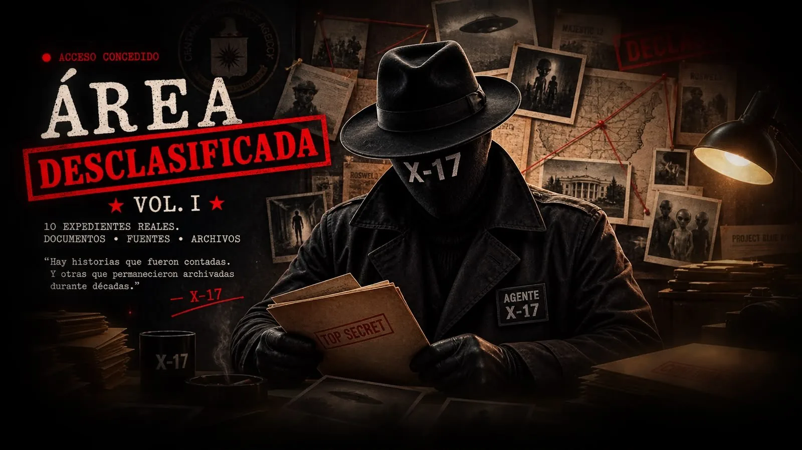
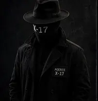
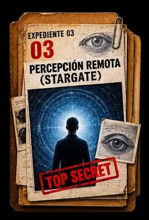
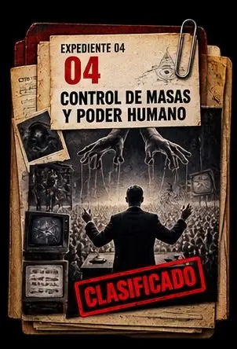
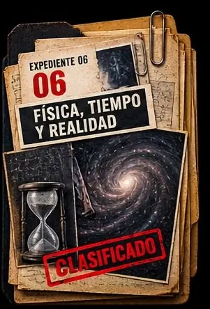
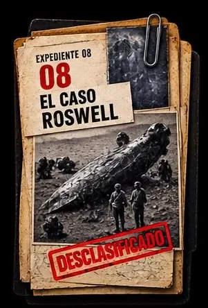
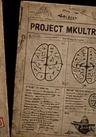
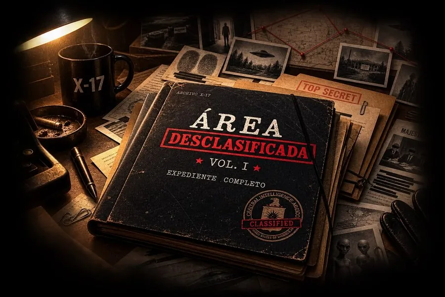

Ovnis y fenómenos anómalos
Casos reportados, los informes oficiales que los siguieron y las explicaciones que se dieron después.
Ver expediente →
Archivo X-17
Sistema de acceso restringido
Conexión segura
Verificando credenciales
Identidad confirmada.
Nivel de acceso autorizado.
Expediente disponible.
X17-584920-0 · VOL. I · 10 EXPEDIENTES
Acceso seguro
Archivo X-17

Documentos reales. Testimonios. Evidencias. Historias que siguieron ocultas… hasta ahora.
Acceso inmediato · Pago seguro · Descarga ilimitada

Agente X-17
Investigador / Archivista
— X-17
Diez casos. Diez archivos. Una verdad escondida.




← Deslizá para recorrer el archivo →
Una selección del contenido que vas a encontrar.
Documento 01
Documento 02

Documento 03
Documento 04
Las muestras son ilustrativas del formato del volumen.
Dentro del expediente
Creados a partir de documentos oficiales.
Informes, memorandos, cartas y más.
Relatos de testigos y protagonistas.
Líneas de tiempo de cada caso.
Contexto, conexiones y lecturas posibles.
Descargá y accedé cuando quieras.
Control de credenciales
Estado: Pendiente

Pago único. Sin suscripción. El archivo queda disponible para vos.
US$7,90
Pago seguro encriptado
Falta configurar el enlace de pago (CHECKOUT_URL).
Tus datos y tu acceso están protegidos.
Si no es lo que esperabas, pedís el reembolso en el plazo de la plataforma de pago.
Accedé cuando quieras, desde cualquier dispositivo.
Antes de abrir el archivo
Área Desclasificada · Vol. I · ARCHIVE UNLOCKED